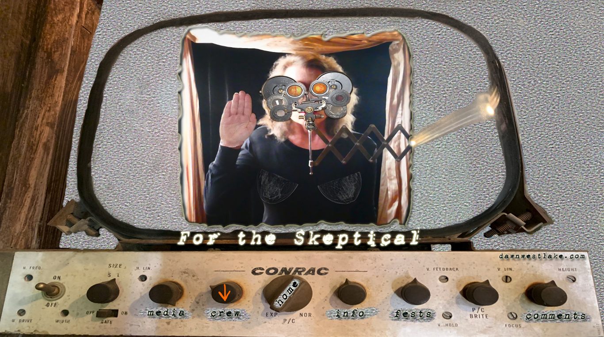

Dawn is president of Ron de Cana Prods., Inc. in Los Angeles. This is her 23rd short under her
Ron de Cana banner. Her work has played on all 7 continents (yes, even Antarctica) and won
87 awards, including honors from Canon USA, Inc. and JVC-Tokyo. Dawn is also an actress/
writer/producer and has been on the jury of the SediciCorto Film Fest in Forli, Italy, the ECU
Film Festival in Paris, France, M Film Festival in Matosinhos, Portugal, the Chicago Shorts Film
Fest jury in Chicago, Illinois and the Red Rock Film Fest pre-selection committee in Moab, Utah.
She speaks English and Spanish fluently and is proficient in Italian and Portuguese. Dawn
graduated first in her class with a B.S. degree in Radio-TV-Film from Northwestern University in
Evanston, IL. She has been married for 33 years to Bruce Rheins, a retired producer and
bureau chief for CBS News. In 2013, she directed “Look Who’s Stalking”, a series for the BIO
Network at NBCUniversal in Los Angeles. It aired in March & April 2013. Dawn has been
honored with retrospectives of her work in London at the Portobello Film Festival, at the Fellini
Foundation in Rimini (Italy), and at the Henry Miller Library in Big Sur, California.
www.dawnwestlake.com
BeatsMadebyFresh(Christian Frazier), also known as “Fresh”, is a skilled producer/musician
from the 1500orNothin Collective. His musical training began in the home, as his mother and
late father (Ray Frazier of Ray Frazier & the Shades of Madness) were naturally-gifted
professional musicians, singers, and songwriters. Now, with over 10 years of experience in the
music industry, Fresh has developed an impressive professional music catalog comprised of
songs and various projects with eminent artists such as Boney James, Blxst, Coi Leray,
Saweetie, Timbaland, Tink, and many others. His music placements can be found on prominent
networks such as HBO, FOX, BET, NBC, and MTV, in addition to a variety of versatile
placements with brands such as Native Instruments, Bevel, Vintage Silks, sounds.com, to name
a few. His works are not limited to any genre as he is well versed in R&B, Hip- Hop, Pop, Jazz,
funk, Neo-Soul, and adept at all things music-related. Fresh’s specialty is using his talent as a
multi-instrumentalist to generate a personalized product that caters directly to the needs and
desires of the client. With his expertise and considerable creative flexibility in the music industry,
he combines songwriting, vocal producing, song production, and artistic direction to create an
environment where artists are able to conceive their best qualities.
Born and raised in Barcelona, Pol has always been fascinated with all things audiovisual. In
2008, he completed studies in 35mm photography, and then immediately entered film school
where he majored in digital photography, television and film. While still in school, he began
producing personal and professional projects and graduated from an advanced course in sound
mixing with superior grades. Pol continues to expand his knowledge in all aspects of filmmaking
using the Adobe Suite and DaVinci Resolve, incorporating them into his workflow. As a
freelancer, he works on still photography and video projects as well as in the art department for
private citizens, large corporations and collaborates with renowned artists like Jaume Pitarch.
Recent credits include “Iba”, an Alejandro Sanz music video, and commercials for Oppo,
Vueling, Carglass, Inkbox, Holalux & Lidl. The majority of his work is in his hometown of
Barcelona, but he’s also worked in other parts of Spain, and on location in France, England, and
the United States. Pol won the Carpine d’Argento BEST CINEMATOGRAPHY award in
Visciano, Italy in 2018 for “From On High”, a 2017 short film by director Dawn Westlake. Pol has
also traveled and photographed extensively in South America, Asia, and Africa. Even on
personal journeys, he’s never without his camera. With Andrea Perez Maldonado, Pol is a
founding partner in Imatge Barcelona, a production company dedicated to cinematic and still
photography.
imatgebarcelona.com